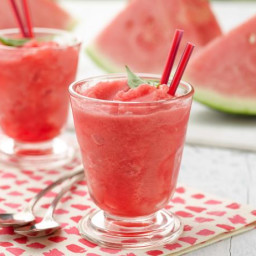

Watermelon Cooler Slushy

The perfect slushy for lounging on the beach right before the sun sets
These delicious slushys are only 79 calories per serving, which in my case
means I end up drinking a lot of them !! The slushy is a wonderfully gentle
treat to let you beat the heat and relax in peace. This slushy will always
put a smile on your face and those of anyone you drink it with as well!
If you like watermelons and good drinks, this is for you.
Ingredients
- 4 cups cubed seedless watermelon
- 1/3 cup fresh lime juice
- 1/4 cup white sugar
- 1/8 teaspoon salt
- 10 ice cubes
Steps
- Place and ice into a blender
- Pour in lime juice, sugar, and salt
- Blend until smooth